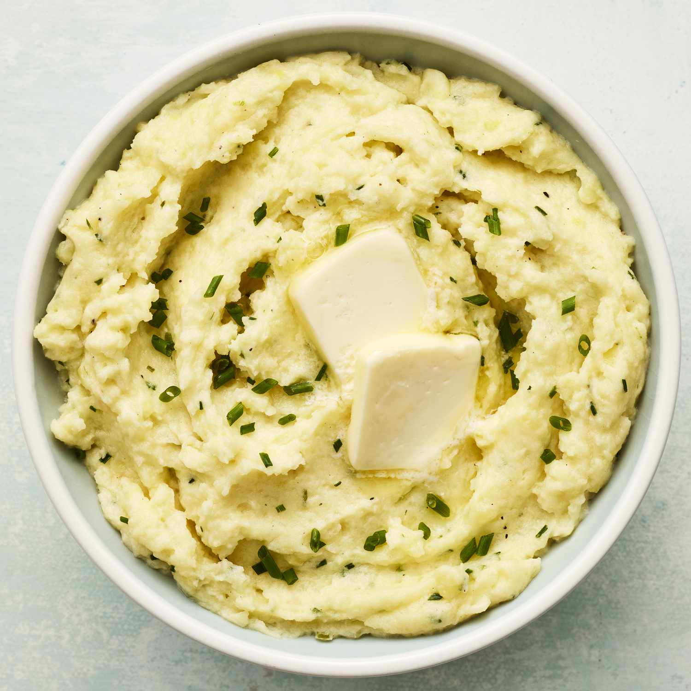

Pan Seared Salmon

Pan Seared Salmon
This delicious salmon dish is comprised of fresh salmon cooked in virgin olive oil.
It has been seasoned with ground black pepper and salt. The flavoring has also been
enhanced by the addition of freshly sliced lemon and capers.
Ingredients
- 4 (6 ounce) fillets salmon
- 2 tablespoons olive oil
- 2 tablespoons capers
- ⅛ teaspoon salt
- ⅛ teaspoon ground black pepper
- 4 slices lemon
Steps
- Preheat a large heavy skillet over medium heat for 3 minutes.
- Coat salmon fillets with olive oil.
- place skin-side down in the preheated skillet and increase heat to high.
- Sprinkle with capers, salt, and pepper.
- cook for 3 minutes on one side.
- Turn salmon fillets over.
- continue to cook until salmon flakes easily with a fork, about 5 minutes.
- Transfer salmon to individual plates and garnish with lemon slices.
Basic Mashed Potatoes

Basic Mashed Potatoes
This a basic mashed potatoes recipe which involves the use of potatoes, milk, butter, and salt.
Ingredients
- 2 pounds baking potatoes, peeled and quartered.
- 3 cloves garlic, peeled, or to taste (Optional)
- 1 cup milk
- 2 tablespoons butter
- salt and ground black pepper to taste
Steps
- Bring a large pot of salted water to a boil. Add potatoes and garlic,
lower heat to medium, and simmer until potatoes are tender, 15 to 20 minutes.
- When the potatoes are almost finished, heat milk and butter
in a small saucepan over low heat until butter is melted.
- Drain potatoes and return to the pot. Slowly add warm milk mixture, blending it in with
a potato masher or electric mixer until potatoes are smooth and creamy. Season with salt and pepper.
Balsamic Flank Marinated Steak

Balsamic Flank Marinated Steak
A balsamic vinaigrette doubles as a marinade here, giving flank steak enormous flavor while it marinates overnight.
The dressing comes together quickly in a blender with garlic, rosemary, oregano, and a touch of mustard.
Serve the sliced steak over toasted bread with grilled vegetables or use it as the basis for an epic steak sandwich.
Ingredients
- 2 garlic cloves, sliced
- 1 tablespoon rosemary leaves
- 1 tablespoon dried oregano
- 2 tablespoons whole-grain mustard
- 1/2 cup balsamic vinegar
- 1 cup extra-virgin olive oil, plus more for grilling
- Kosher salt
- Freshly ground black pepper
- 1 (3-pound) flank steak
Steps
- In a blender, combine the garlic, rosemary, oregano, mustard, and vinegar and puree until the garlic is minced.
With the machine on, gradually add the oil and blend until creamy. Season lightly with salt and pepper.
- Add the meat to a glass or ceramic baking dish and pour all but 1/4 cup of the vinaigrette on top; turn the meat to coat.
Cover with plastic wrap and refrigerate for at least 4 hours and up to 24 hours.
- Light a grill and oil the grates. Remove the steak from the marinade, letting the excess drip off.
Season with salt and pepper. Grill the steak over moderate heat, turning occasionally,
until lightly charred and an instant-read thermometer inserted in the thickest part registers 125°F, 10 to 12 minutes.
Transfer the steak to a carving board and let rest for 5 minutes.
Thinly slice the meat against the grain and serve, passing the remaining vinaigrette at the table.